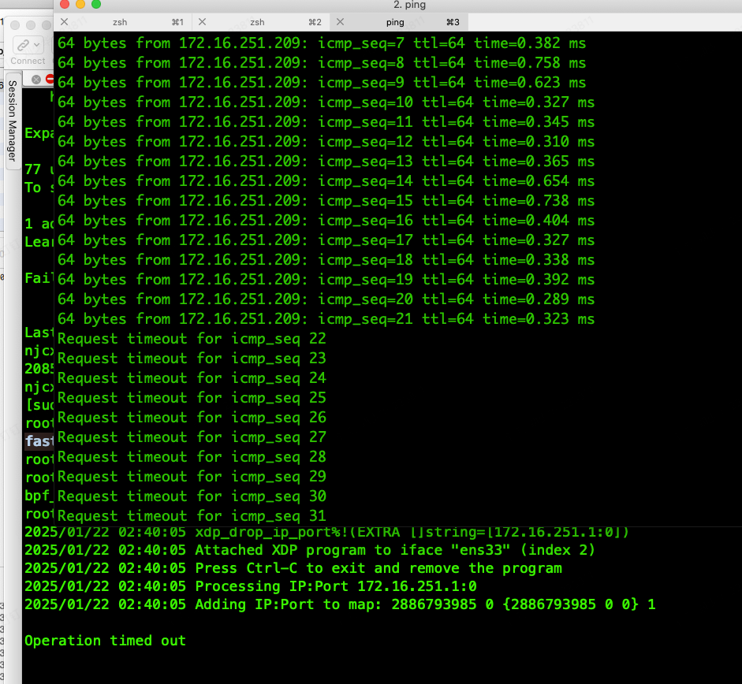

介绍
eBPF（Extended Berkeley Packet Filter）最初设计用于高效网络包过滤，现在已扩展到操作系统和用户空间应用程序之间的多种交互场景。它允许在操作系统内核中安全地执行沙盒程序，而无需更改内核源代码或加载自定义内核模块。XDP（Express Data Path）是eBPF的一个子系统，专注于网络数据包的快速处理。
XDP通过在网络设备驱动层面上提供一个早期处理点来加速数据包的处理过程。这意味着数据包在到达更高级别的网络堆栈之前就能被处理，从而能够实现极低延迟的数据包过滤和转发。XDP程序使用eBPF编写，并直接附加到网络接口上。由于XDP工作在网络驱动层，因此能够在不影响系统其余部分的情况下以最高速度处理数据包。尽管性能极高，但XDP依旧保留了eBPF的灵活性，使得开发者可以根据需要定制数据包处理逻辑。
当网络接口接收到一个数据包时，XDP程序会首先处理这个数据包。XDP程序可以决定对这个数据包执行什么操作，如丢弃、通过或修改数据包。
XDP 和 Netfilter对比
XDP（eXpress Data Path）和Netfilter都是Linux内核中用于网络数据包处理的框架，但它们在设计理念、性能、使用场景等方面存在显著差异。以下是对两者的对比：
- 处理阶段 XDP：XDP是在网络数据包到达网卡驱动层之后、进入更高级别的TCP/IP协议栈之前进行处理的。这意味着它能够以最小的延迟处理数据包。 Netfilter：Netfilter则是在网络堆栈的不同层次上设置了多个钩子点（如PREROUTING、INPUT、FORWARD、OUTPUT、POSTROUTING），允许在这些点上对数据包进行过滤、修改等操作。
- 性能 XDP：由于其处理发生在网络数据包进入系统后尽可能早的阶段，并且可以绕过不必要的协议栈处理，因此具有更高的性能和更低的延迟。特别是在需要快速决策（例如丢弃恶意流量）的情况下，XDP表现尤为出色。 Netfilter：虽然Netfilter也支持高效的数据包处理，但由于它位于协议栈内部，因此相比XDP可能会引入更多的延迟。
- 可编程性与灵活性 XDP：通过使用eBPF（Extended Berkeley Packet Filter），XDP提供了高度可编程的能力，允许开发者编写复杂的逻辑来处理数据包。同时，由于是运行于沙盒环境中的字节码，保证了安全性。 Netfilter：主要通过iptables命令行工具或nftables来进行配置，对于简单的规则集非常直观，但对于复杂逻辑可能不如XDP灵活。
总结来说，如果应用需要极高的性能和低延迟，则XDP可能是更好的选择， 选用Netfilter则可能 Too late。
开发
利用XDP开发的快速丢包工具， 快速丢弃指定IP请求的包，减少协议栈的计算开销，减少CPU和网卡的负载。Loader 是使用 Go + github.com/cilium/ebpf 开发而成， 从Redis List 读取 IP(source ip) + Port(dest port),将IP + Port 加入到eBPF MAP中，拦截指定ip到本机端口的包，不区分TCP/UDP， 当Port 为0时，拦截所有的包。
处理第4层（传输层）的TCP或UDP协议。首先计算第4层头部位置，检查是否超出数据范围。如果是TCP或UDP协议，则提取目标端口号并存储在key中.
static __always_inline int process_l4(struct iphdr *ip, void *data_end,
struct ip_port_key *key) {
struct tcphdr *tcp;
struct udphdr *udp;
void *l4_hdr = (void *)ip + (ip->ihl * 4);
if (l4_hdr + sizeof(struct tcphdr) > data_end)
return XDP_PASS;
if (ip->protocol == IPPROTO_TCP) {
tcp = (struct tcphdr *)l4_hdr;
key->port = bpf_ntohs(tcp->dest);
bpf_debug("TCP Port: %d", key->port);
} else if (ip->protocol == IPPROTO_UDP) {
udp = (struct udphdr *)l4_hdr;
key->port = bpf_ntohs(udp->dest);
bpf_debug("UDP Port: %d", key->port);
} else {
bpf_debug("Not TCP/UDP", 0);
return -1;
}
return 0;
}
在网络数据包进入内核之前进行处理。主要功能包括：
- 检查并解析以太网帧和IP头部。
- 如果不是IPv4数据包或IP头部不合法，则直接放行。
- 查找是否需要丢弃该IP的数据包。
- 处理四层协议，并再次检查是否需要丢弃。
SEC("xdp")
int xdp_prog(struct xdp_md *ctx) {
void *data = (void *)(long)ctx->data;
void *data_end = (void *)(long)ctx->data_end;
struct ethhdr *eth = data;
struct iphdr *ip;
__u32 *drop_flag;
struct ip_port_key key = {};
CHECK(data, data_end, eth, sizeof(*eth));
if (eth->h_proto != bpf_htons(ETH_P_IP))
return XDP_PASS;
ip = (struct iphdr *)(eth + 1);
CHECK(data, data_end, ip, sizeof(*ip));
if (ip->version != 4)
return XDP_PASS;
if (ip->ihl < 5 || ip->ihl > 15)
return XDP_PASS;
if ((void *)ip + (ip->ihl * 4) > data_end)
return XDP_PASS;
key.ip = bpf_ntohl(ip->saddr);
key.port = 0;
drop_flag = bpf_map_lookup_elem(&drop_ips_ports, &key);
if (drop_flag && *drop_flag == 1) {
return XDP_DROP;
}
if (process_l4(ip, data_end, &key) == 0) {
drop_flag = bpf_map_lookup_elem(&drop_ips_ports, &key);
if (drop_flag && *drop_flag == 1) {
return XDP_DROP;
}
}
return XDP_PASS;
}
将IPv4地址字符串转换为32位无符号整数。注意大端序问题， 具体步骤如下：
- 解析输入的IP地址字符串。
- 将IPv4地址的四个字节按位移操作组合成一个32位整数并返回。
func ipToUint32(ipStr string) (uint32, error) {
ip := net.ParseIP(ipStr)
if ip == nil {
return 0, fmt.Errorf("invalid IP address: %s", ipStr)
}
ipv4 := ip.To4()
if ipv4 == nil {
return 0, fmt.Errorf("not an IPv4 address: %s", ipStr)
}
return uint32(ipv4[0])<<24 | uint32(ipv4[1])<<16 | uint32(ipv4[2])<<8 | uint32(ipv4[3]), nil
}
从Redis中获取IP和端口列表，并将这些IP和端口转换为结构体后存入eBPF映射中。具体步骤如下：
- 获取Redis中的IP和端口列表。
- 遍历IP和端口列表，解析每个IP和端口。
- 将解析后的IP和端口存入eBPF MAP中。
eBPF MAP 的key ，可以是一个结构体。
func updateMapKeyV(client *redis.Client, updateMap *ebpf.Map) {
ctx := context.Background()
ipList, err := client.LRange(ctx, "xdp_drop_ip_port", 0, -1).Result()
if err == redis.Nil {
log.Fatal("xdp_drop_ip_port key does not exist")
} else if err != nil {
log.Fatal(err)
} else {
log.Println("IpList", ipList)
}
type ipPortKey struct {
IP uint32
Port uint16
_ uint16
}
for i := range ipList {
log.Println("Processing IP:Port", ipList[i])
split := strings.Split(ipList[i], ":")
ip, _ := ipToUint32(split[0])
port64, err := strconv.ParseUint(split[1], 10, 16)
if err != nil {
log.Fatalf("invalid port number: %s", split[1])
}
port := uint16(port64)
key := ipPortKey{
IP: ip,
Port: port,
}
value := uint32(1)
log.Println("Adding IP:Port to map:", ip, port, key, value)
err = updateMap.Put(key, value)
if err != nil {
log.Fatalf("Failed to update map: %v", err)
}
}
}
ubuntu 24.04 下编译：
apt install clang llvm git golang make gcc-multilib -y
make
启动方法：
./fastdrop + 网卡名, 比如 ./fastdrop ens33
redis list 数据格式：
- 172.16.251.209:80
- 172.16.251.201:53
- 172.16.251.208:0
使用场景： 抗D 、 WAF、 网关、 CDN， 等等。 全文完。
代码地址
https://github.com/njcx/fastdrop
